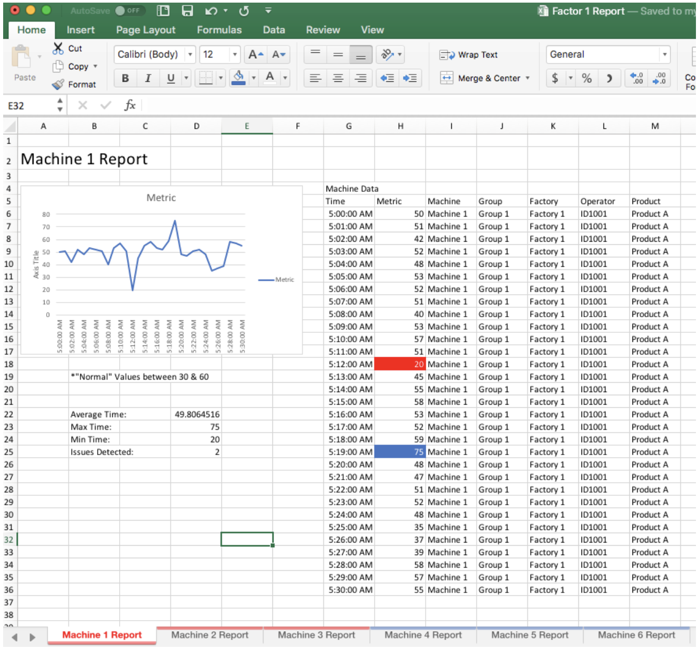

Data Visualization Challenge
View the InVision PrototypeThis project objective was to transform an excel spreadsheet loaded with important information into a visual representation of that data. This would allow users to quickly identify certain trends and outliers in the reports.
Role
UX Designer
Visual Designer
Deliverables
Wireframes
HiFi Mockups
HiFi Prototype
Tools
Sketch
InVision
Overview
This is a case study for a 24 hour design challenge that I completed. The client had a need for better data visualization to track their factory issues and employee performance. They provided me with one current report. The objective was to create a new reporting system that would allow them to track their employee and machine performance easily and efficiently.
The Problem
The client has recently aquired a new company and needs to reinvent how they monitor their machines. The client provided one screenshot of what their current report looks like. They need to be able to quickly understand machine performance, filter through details, and identify specific issues quickly. They want to monitor their equipment and spot abnormal metrics across all their machines.
The Solution
I designed a mockup of what a new reporting system could look like. This new report allows the user to quickly pull a report and gain a broad perspective of their factory productivity, while also being able to identify issues and drill down into details.
Wireframes
After wrapping my head around what needed to be accomplished, I dove straight into rapid wireframing. Due to the time constraints I focused heavily on usability and followed basic best practices for data visualization design.
Colors & Typeface
I went with a basic and straight forward color scheme, something that could easily be changed or customizable should the client have specific branding needs. I used Arial for the typeface which is proven to be best for consuming information on reports.
High Fidelity Prototype
As soon as I had my ideas laid out in my wireframes, I quickly moved on to HiFi mockups so that I could better visualize the user journey. This work relied heavily on making the flow intutive and seamless so that any user in the company could easily log in and understand how to create reports and identify issues with minimal to no training required.
Reflection
This project was completed in less than 24 hours, which made it different than other projects I have completed. Educating myself on the design principles of data visualization contributed greatly to successfully developing a report and platform that easily allowed users to pull specific reports, tailor those reports to their specific needs and then identify any outliers within their reports so that they could take action quickly. This process reinforced the importance of quickly iterating while maintaining acute attention to detail.